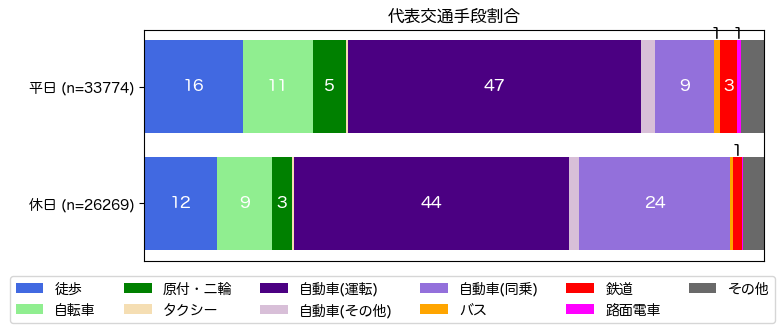

解説 6
図1に全てのトリップで使われた、代表的な交通手段の利用割合を示します。 自動車交通が、平日は59%、休日は70%を占めており、車社会が形成されていることがわかります。 徒歩と自転車は、合わせて平日は27%、休日は21%を占めますが、バス・鉄道・路面電車の占める割合は、2〜5%にすぎません。 特に、休日の方が自動車交通の占める割合が高く、休日に行われる買い物や娯楽活動に自動車が多く用いられていることが推測されます。

図1：交通手段分担率
図1に全てのトリップで使われた、代表的な交通手段の利用割合を示します。 自動車交通が、平日は59%、休日は70%を占めており、車社会が形成されていることがわかります。 徒歩と自転車は、合わせて平日は27%、休日は21%を占めますが、バス・鉄道・路面電車の占める割合は、2〜5%にすぎません。 特に、休日の方が自動車交通の占める割合が高く、休日に行われる買い物や娯楽活動に自動車が多く用いられていることが推測されます。

図1：交通手段分担率